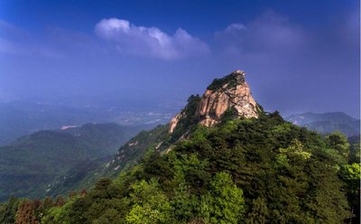
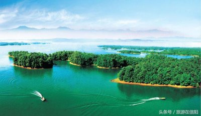

|  |  |
鸡公山，位于河南省信阳市境内，桐柏山以东，大别山最西端，是中国四大避暑胜地之一，也是新中国第一批对外开放的全国八大景区之一，第一批列入全国44个国家级重点风景名胜区之一，鸡公山是国家级自然保护区，区内森林茂密、生物资源丰富，有国家重点保护动植物大鲵、长尾雉、香果树等，是河南农林、师范、医药等高校教学和科研基地。 鸡公山有“青分豫楚、襟扼三江”之美誉，“佛光、云海、雾凇、雨淞、霞光、异国花草、奇峰怪石、瀑布流泉”被称为八大自然景观，山上有清末民初不同国别和风格的建筑群，有“万国建筑博物馆”之美称，是中国历史上第一个公共租界。2016年1月，鸡公山国家级自然保护区被河南省旅游景区质量等级评定委员给予通报批评并限期整改。2019年10月18日，鸡公山国家级自然保护区入选2019第五届中国森林氧吧榜单。2022年7月，河南省信阳市鸡公山景区被确定为5A级旅游景区。 南湾湖位于信阳市西南的南湾湖，有着“豫南明珠”的美誉。这里水域面积辽阔，是杭州西湖的十多倍。站在湖边放眼望去，烟波浩淼，水天相接。南湾湖由南湾湖和南湾国家森林公园组成，南湾湖水清澈透明，又带了些微绿。湖中的岛上绿树成林，苍翠欲滴，鸟岛、猴岛、消夏岛等几十座岛屿错落分布。南湾湖周边植被茂盛，空气清新，是休闲度假的好去处。 |
|